채널: 레디포그로스 (Ready For Growth) | 길이: 23:47 | 날짜: 2026-01-27
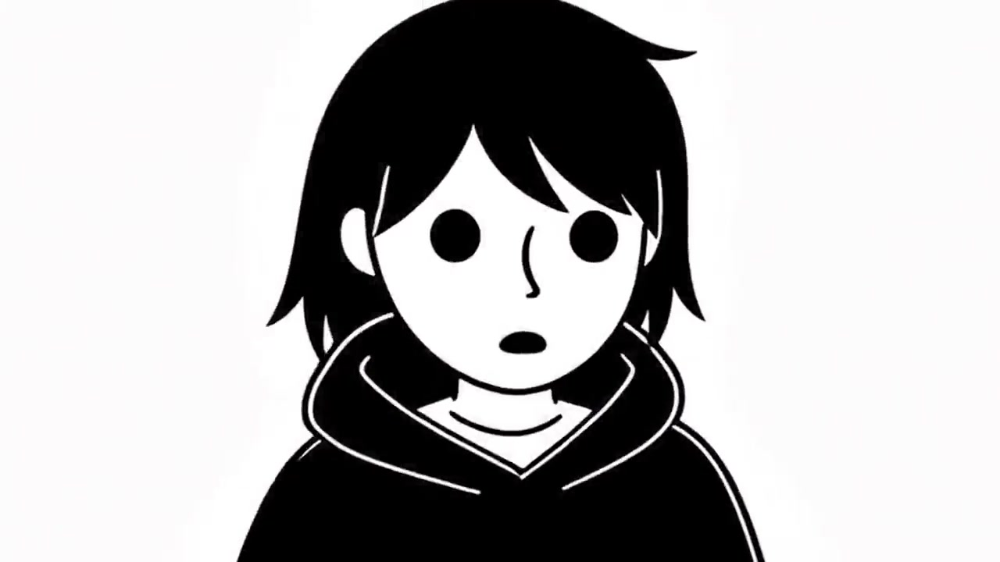
발표자는 시청자의 현재 상태를 즉시 규정합니다. 한 생각에서 다른 주제로 끝없이 분기되고, 잠들기 전 과거 대화 후회(“3년 전 대화”), 내일 할 일 걱정으로 전환되며, 결국 새벽 2시까지 각성되는 루프를 묘사합니다.
핵심 비유는 “수백 개 탭이 열린 브라우저”이며, 이는 단순한 피곤함이 아니라 인지 자원 점유 상태로 설명됩니다. 이어서 2025년 미국 심리학회 저널 연구를 인용해 INFJ가 하루 평균 6만5천 개 이상 생각을 처리한다는 수치를 제시합니다.
시각적으로는 흑백 톤의 단순한 인물 클로즈업으로 시작해, 복잡성의 주제를 인물의 표정 중심으로 압축합니다.
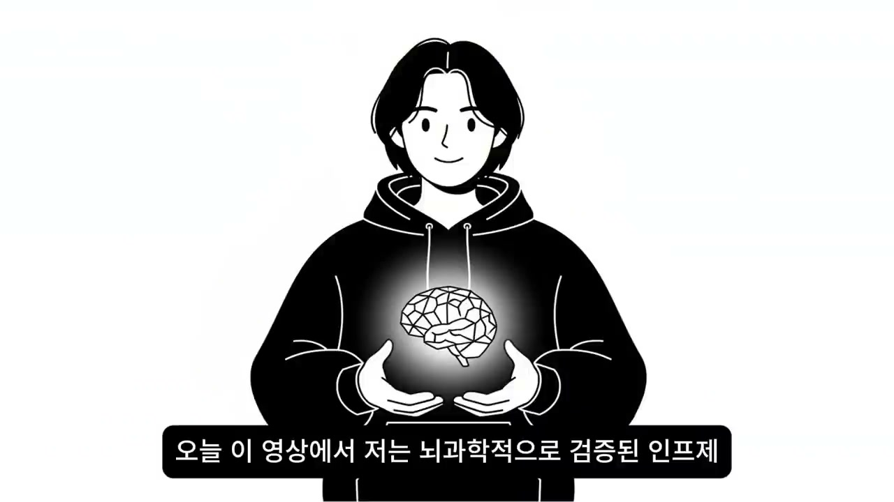
6만5천 생각 수치를 MBTI 전체 중 최고 수준이라고 강조하며, 문제의 본질을 “생각의 양”이 아니라 정리되지 않은 무한 루프로 전환합니다. 그 결과로 분석마비, 실행 지연, 자기비난이 연쇄된다고 진단합니다.
해결 약속은 명확합니다: “뇌과학적으로 검증된 INFJ 맞춤형 생각정리 시스템”을 제공하겠다는 선언, 그리고 “오늘 밤 바로 적용 가능”한 실천법까지 제시하겠다는 실행 약속입니다.
스크린샷에는 점-선 네트워크(별자리/패턴)와 인물이 함께 배치되어, 이후 전개될 “패턴 인식 능력”의 시각적 예고를 수행합니다.
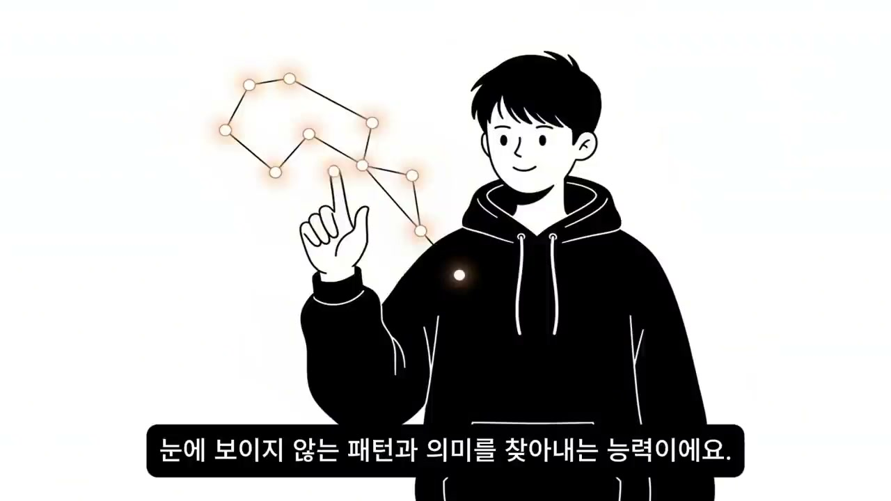
발표자는 해결 이전에 원인 기제를 정확히 이해해야 한다고 전제합니다. INFJ의 주 기능을 내향 직관(Introverted Intuition)으로 설명하며, 이는 표면 정보가 아니라 보이지 않는 패턴·의미·미래 전개를 찾는 사고라고 정의합니다.
즉 일반인이 표면 데이터를 읽는 동안 INFJ는 자동으로 심층 분석 시뮬레이션을 시작한다는 주장입니다. 하버드 의대 신경영상연구소(2023) 결과를 끌어오며 다음 세그먼트의 생물학적 근거로 연결합니다.
시각적으로는 인물이 빛나는 뇌 이미지를 양손으로 받쳐 들고 있어 “인지 시스템 자체”가 주제임을 명확히 합니다.
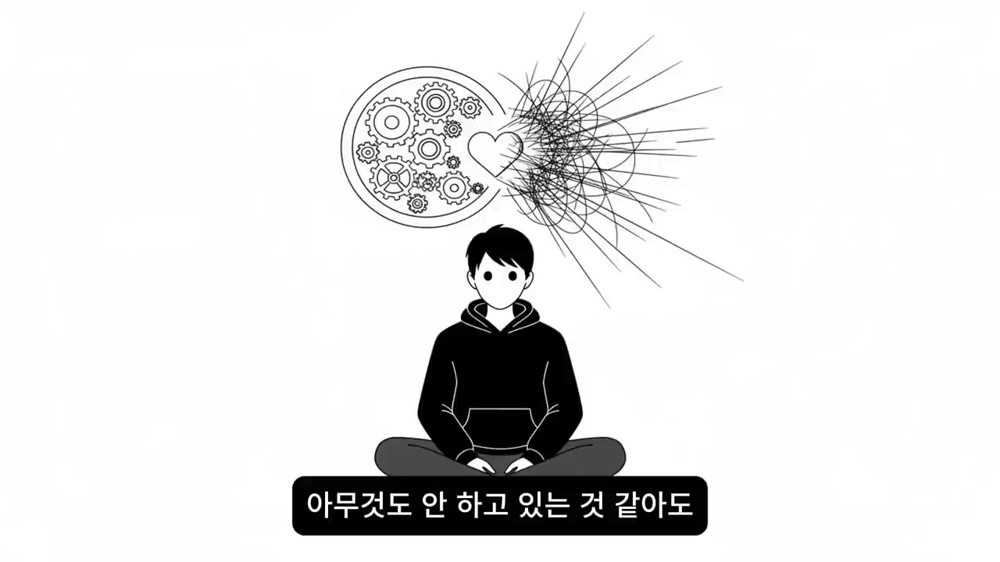
하버드 연구 결과로 “디폴트 모드 네트워크(DMN) 활성화가 일반인 대비 38% 높다”는 수치를 제시합니다. DMN은 외부 과제 비집중 시 작동하며 자기성찰·미래계획·과거회상 등 내면 사고를 담당한다고 설명합니다.
핵심 논점은 INFJ는 가만히 있어도 뇌가 쉬지 않고 시뮬레이션을 돌린다는 점이며, 여기에 부기능 외향감정(Fe)이 결합되면 복잡도가 급격히 상승한다고 말합니다.
이미지에는 인물 뒤에 Intuition, Emotion 두 개의 큰 원이 배치되어 “이중 부하”를 직관적으로 표현합니다.
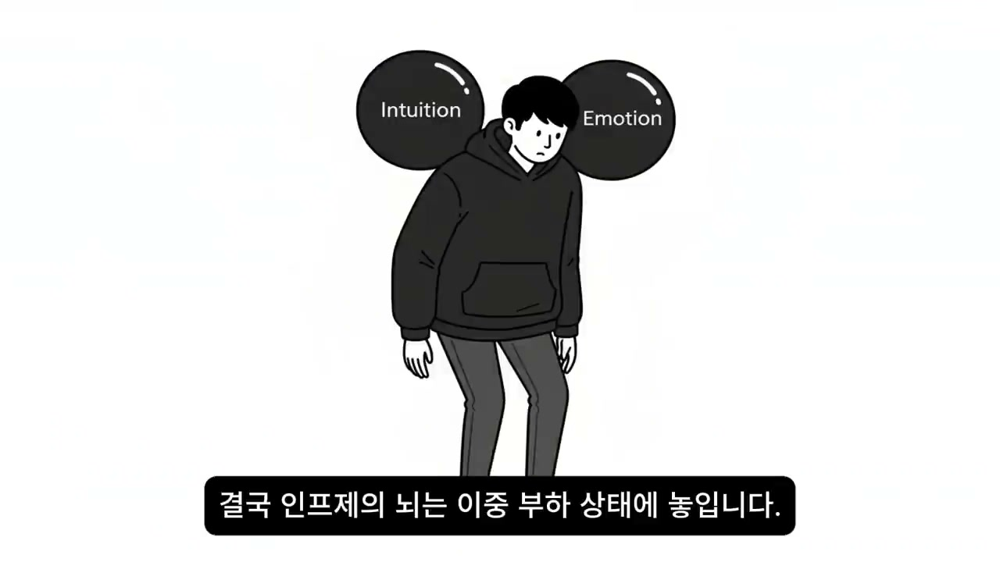
2024년 막스플랑크 인지신경과학연구소 발표를 인용해, 외향감정 발달 유형은 거울뉴런 시스템 반응성이 상위 12%라는 수치를 제시합니다. 동료의 한숨, 친구 말투의 미묘한 불안까지 자동 감지/흡수된다는 예시를 듭니다.
결국 INFJ 뇌는 “내향직관의 추상 사고 폭주 + 외향감정의 감정 데이터 축적”이 동시에 돌아가는 이중부하 상태라는 결론으로 수렴합니다. 추가 문제로 “내면 내용을 외부 표현하는 데 서툴다”는 특성이 병목으로 제시됩니다.
스크린샷은 투두/다이어리/명상 아이콘과 불안한 표정의 인물을 배치해, 기존 도구 시도와 부담감을 함께 상징합니다.
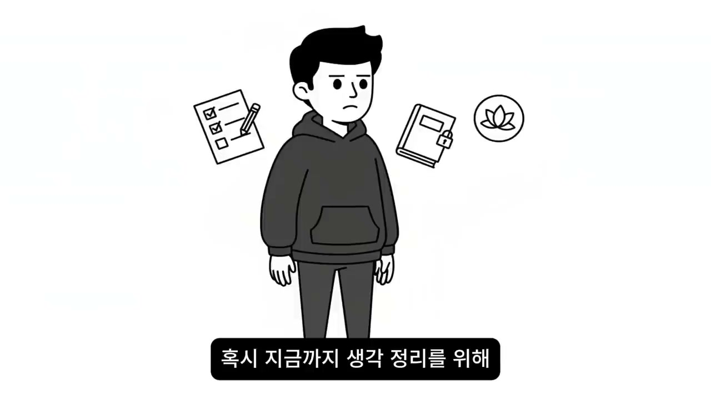
INFJ의 내향성과 완벽주의 때문에 정리되지 않은 생각을 외부로 꺼내는 것을 꺼린다고 분석합니다. 생각이 머릿속에 갇힌 채 누적되어 결국 포화 상태에 이른다는 진단입니다.
여기서 중요한 전환 문장: 다이어리/투두/명상 앱이 오래 가지 않은 이유는 의지 부족이 아니라 방법과 뇌 작동 방식의 불일치라는 것입니다. 문제를 도덕성(게으름)에서 구조(시스템 미스핏)로 재정의합니다.
이미지의 좌측 정돈된 기어·우측 난잡한 스크리블 대비는 “내면에서는 복잡하지만 외부 도구는 단순선형”인 충돌을 상징합니다.
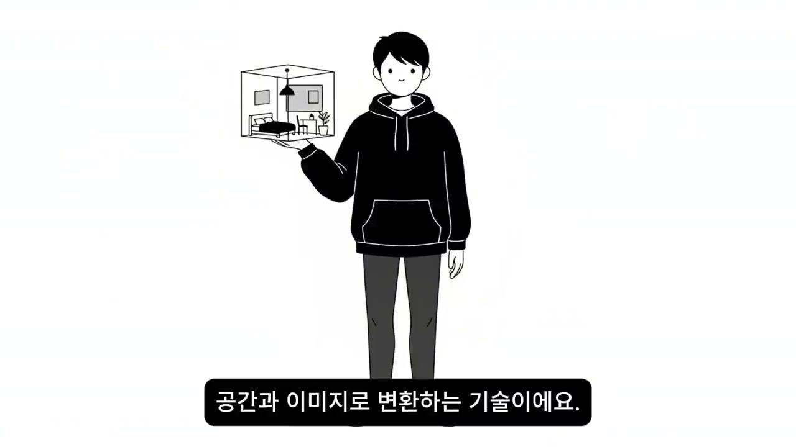
일반 정리법은 선형적 텍스트 기반인데, INFJ 사고는 비선형·이미지 기반이라 담아내지 못한다고 주장합니다. 따라서 목록형 기록이 아니라 공간과 이미지로 변환하는 기술이 필요하다고 선언합니다.
신경과학의 공간인지 시스템을 활용한 시각화 전략이라고 정의하며, INFJ의 직관적 처리 방식에 맞게 설계되었다고 말합니다. 이어 “1단계 브레인덤프의 과학”으로 넘어갑니다.
스크린샷에서 인물이 작은 방(공간 모델)을 손에 들고 있는 장면은 핵심 개념인 ‘공간화’를 직접 시각화합니다.
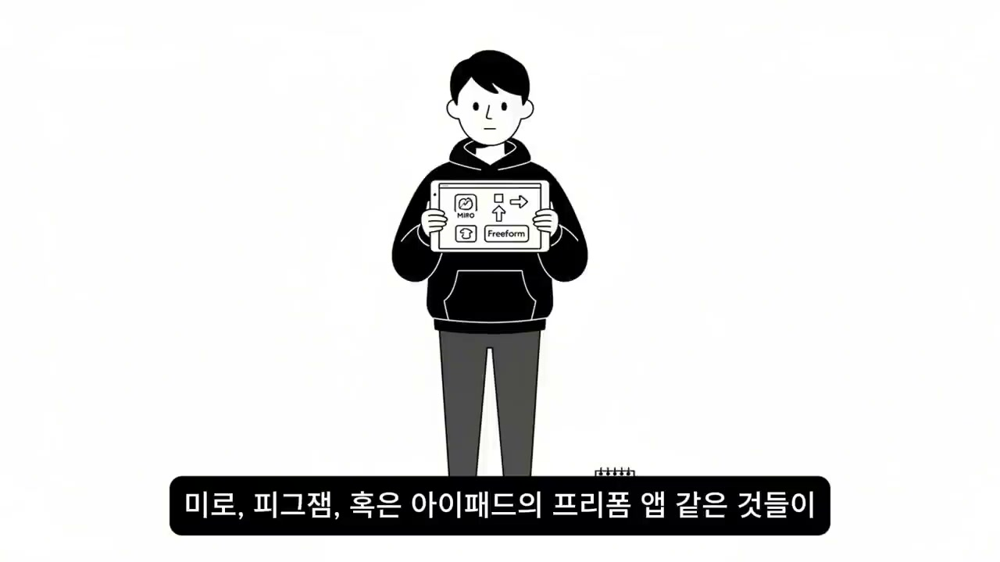
브레인덤프의 절대 원칙은 정리/판단/분류/문법을 모두 금지하고 떠오르는 것을 그대로 기록하는 것입니다. 도구는 A4 이상 큰 종이 또는 무한 캔버스 앱을 권장하고, 작은 노트·일반 문서 파일은 피하라고 안내합니다.
구체 앱 예시로 미로(Miro), 피그잼(FigJam), 아이패드 프리폼(Freeform)을 제시합니다. 타이머를 7분으로 맞추며, 2024년 스탠퍼드 행동설계 연구소 연구를 근거로 7분이 집중 유지와 작업기억 외부 전이에 최적 단위라고 주장합니다.
스크린샷의 태블릿 화면에 MIRO, Freeform 텍스트가 표시되어 도구 제안을 명시적으로 뒷받침합니다.
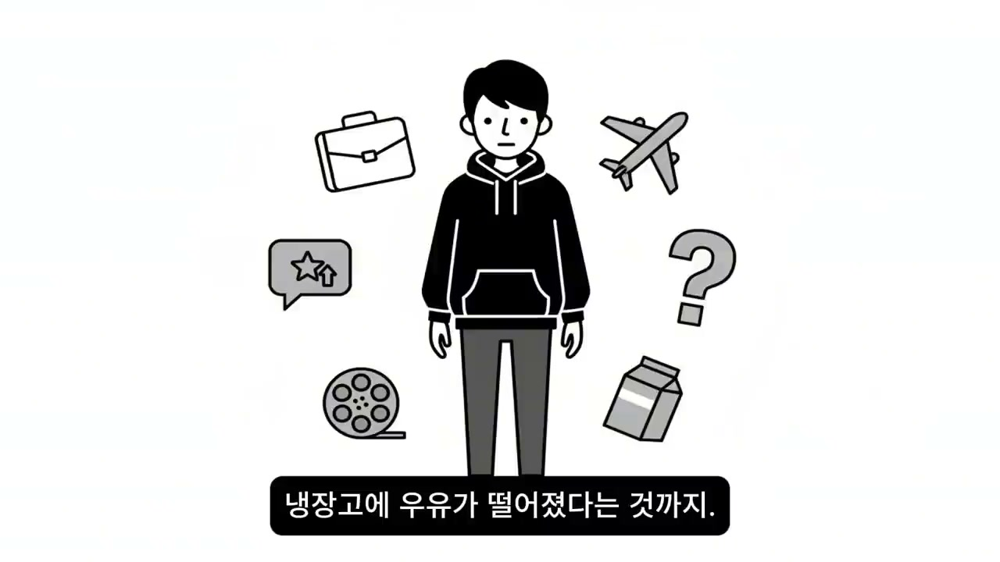
7분 동안 오늘 업무, 피드백 감정, 다음 달 여행, 5년 후 커리어 불안, 어제 본 영화 장면, 우유가 떨어진 사실까지 전부 쏟아내라고 지시합니다. 핵심은 관련 없어 보여도 배제하지 않는 것입니다.
이유는 INFJ 뇌가 이질 요소를 연결해 하나의 맥락으로 통합하는 특성이 있기 때문입니다. 2025년 프린스턴 인지과학연구소 논문을 인용하며 브레인덤프의 효율 효과(다음 세그먼트 수치)로 연결합니다.
이미지는 인물 주변에 서류가방, 비행기, 물음표, 필름 릴, 우유팩 등 서로 다른 아이콘이 동시에 떠 있어 “비관련 항목의 동시 수용” 원칙을 시각화합니다.
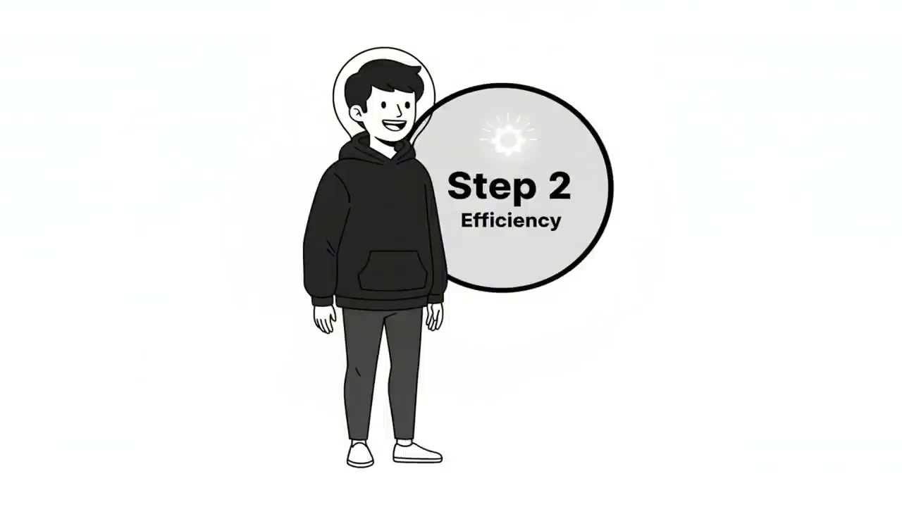
프린스턴 연구 인용 결과로 브레인덤프 후 인지부하 45% 감소, 의사결정 속도 31% 향상을 제시합니다. 머릿속 보관은 RAM을 먹는 백그라운드 프로세스와 같고, 외부 저장으로 옮기면 자원이 확보된다는 컴퓨팅 비유를 사용합니다.
그다음 2단계로 “클러스터링과 패턴 인식”을 제시하며, 브레인덤프 직후 즉시 분석하지 말고 최소 10분~가능하면 1시간 간격을 두라고 권합니다. 뇌가 방출 모드일 때는 객관적 관찰이 어렵다는 이유입니다.
스크린샷에는 Step 2 Efficiency가 크게 표시되어 단계 전환과 목적(효율 향상)을 직접 표기합니다.
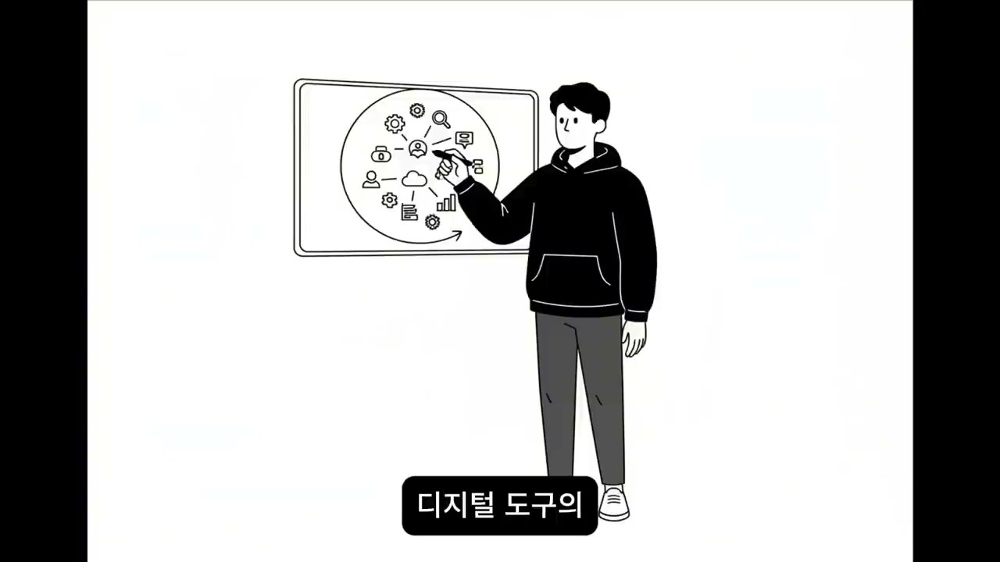
돌아와서는 분석하려 하지 말고 그냥 바라보라고 안내합니다. INFJ의 내향직관은 이때 자동으로 패턴을 찾기 시작하므로, “왠지 연결된 느낌”을 신호로 신뢰하라고 말합니다.
방법은 유사 항목끼리 원으로 묶고(색펜/하이라이트 권장), 보통 4~6개 클러스터가 형성된다고 제시합니다. 클러스터 이름은 직관적으로 붙이며 예시로 커리어 불확실성, 관계, 에너지 누수, 자기개발, 압박감, 일상 유지, 보수 등을 제시합니다.
이미지에 아이콘들이 원형 판넬로 묶여 있고 발표자가 가리키는 장면은 “분류 이전의 통찰 기반 군집화”를 도식화합니다.
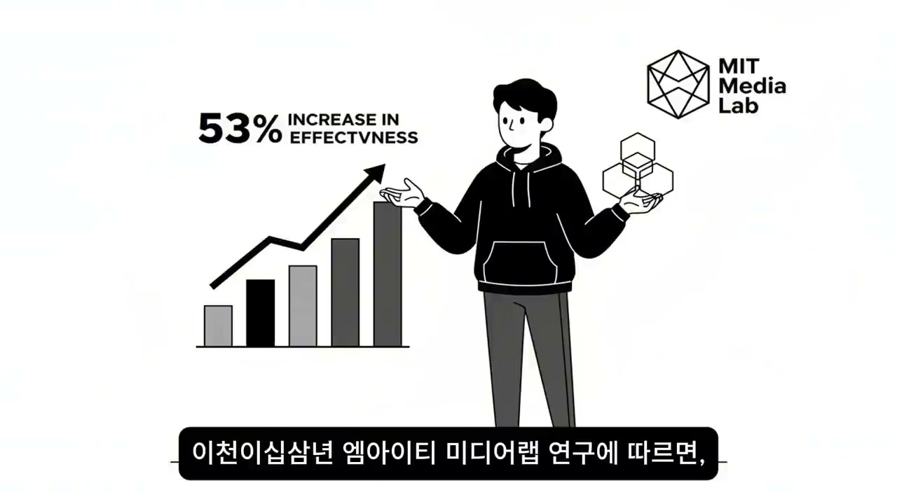
클러스터는 현재 정신 대역폭을 점유하는 핵심 주제들의 지도라고 설명합니다. 막연한 복잡성이 ‘다섯 영역의 미해결 과제’처럼 가시화되면 다룰 수 있다는 감각이 생긴다는 것이 핵심입니다.
2023년 MIT 미디어랩 연구 인용으로, 추상 고민을 시각 클러스터로 변환하면 문제 해결 효능감이 53% 상승했다고 제시합니다. 이 지점에서 3단계(마인드 팰리스 구축)로 넘어가며 영상의 구조적 중심으로 진입합니다.
스크린샷에는 상승 막대그래프와 53% INCREASE IN EFFECTVNESS(오타 포함), MIT Media Lab 로고가 등장해 근거 중심 톤을 강화합니다.
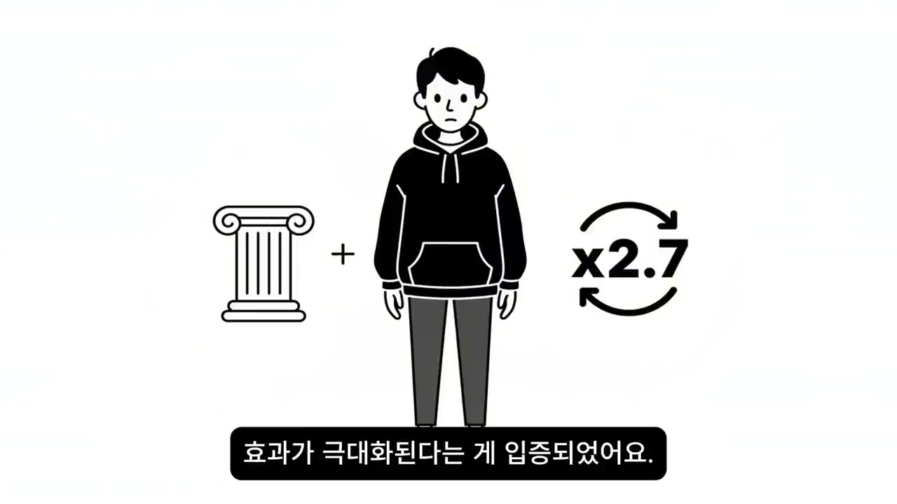
마인드 팰리스(기억의 궁전)를 고대 그리스부터 사용된 기억술로 소개합니다. 2025년 유니버시티 칼리지 런던 신경과학팀 연구를 인용해 일반 암기법 대비 기억 유지율 2.7배, 특히 추상 정보에서 효과 극대화를 주장합니다.
원리는 인간 뇌가 진화적으로 공간 정보를 잘 처리하도록 최적화되어 있다는 설명입니다. 즉 물·위험 위치를 기억해야 했던 생존 메커니즘을 현대의 추상 문제 저장에 전용하는 방식입니다.
시각적으로 고전 기둥 아이콘과 x2.7 표기가 함께 제시되어 “고전 기억술 + 현대 수치 근거” 프레임을 만듭니다.
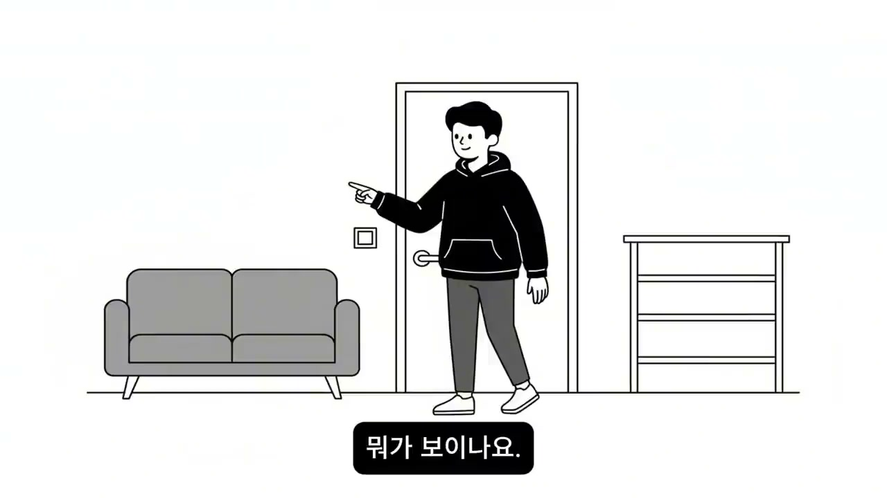
실행 단계는 자신에게 매우 익숙한 공간을 하나 선택하는 것입니다(어린 시절 집, 자주 가는 카페, 출퇴근 경로 등). 조건은 머릿속에서 실제로 걸어 다닐 수 있을 정도의 선명함입니다.
눈을 감고 입구에서 시작해 왼쪽/오른쪽/전진 동선을 따라 5~6개 명확한 위치를 정합니다. 예시 위치로 현관, 거실, 소파, 부엌, 식탁, 창가, 침실, 책상, 욕실, 거울 앞 등을 제시하고, 앞서 만든 클러스터를 각 위치에 배치합니다.
스크린샷은 실제 거실-문-선반 동선 구도로 구현되어 “공간 산책” 지시를 그대로 시각화합니다.
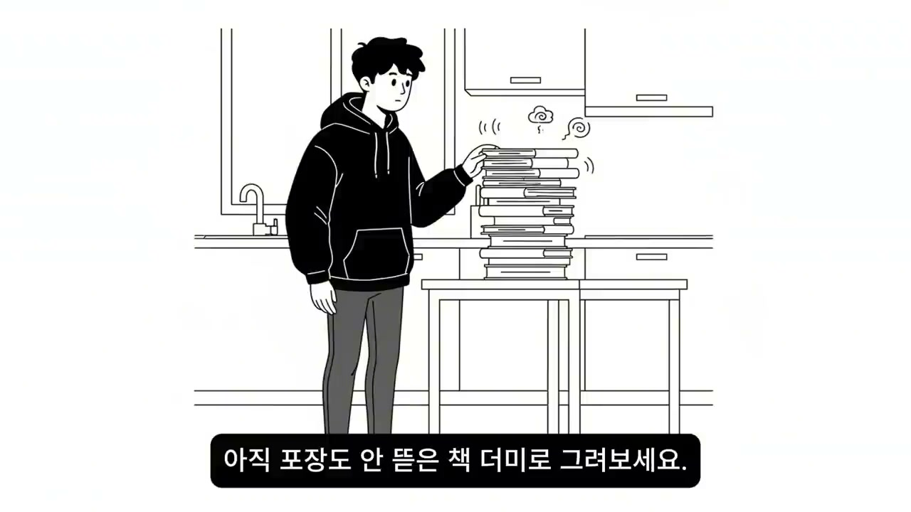
단순 배치가 아니라 각 클러스터를 상징하는 생생한 이미지로 변환하는 것이 핵심이라고 강조합니다. 예시로 커리어 불확실성=현관의 여러 방향 이정표, 관계 에너지 누수=소파 위 반쯤 비고 새는 물컵, 자기개발 압박=부엌 식탁 위 미개봉 책 더미를 제시합니다.
이미지는 구체적·감각적일수록 좋고, 색·질감·크기·냄새·소리까지 상상할수록 기억 고정이 강해진다고 설명합니다. 마지막으로 기본 시스템을 브레인덤프→클러스터링→마인드팰리스 배치의 3단 구조로 재정리합니다.
스크린샷은 실제 부엌 공간에서 불안정하게 쌓인 책 더미를 보여 주어 예시를 직접 재현합니다.
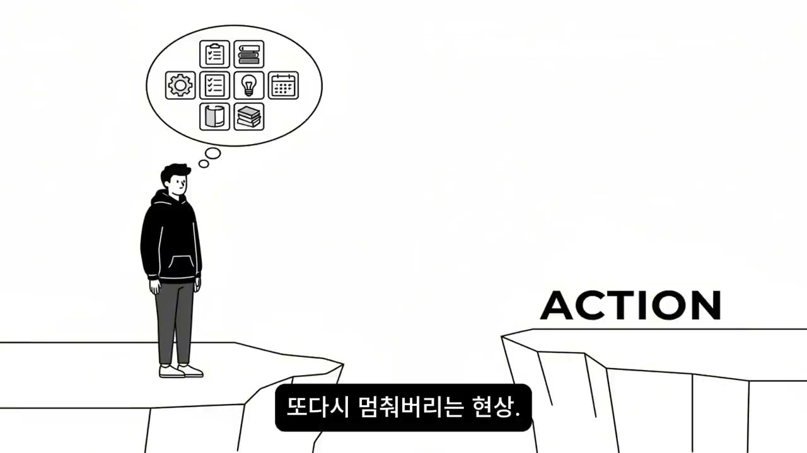
발표자는 솔직한 전환을 합니다: 지금까지의 3단계만으로는 충분치 않다고 명시합니다. INFJ의 치명적 병목은 “정리 완료 후 실행 직전의 멈춤”이며, ‘더 나은 방법이 있을지’ 의심이 무한 증식해 무행동으로 귀결된다는 진단입니다.
다음 단계의 목적은 실행의 벽을 뚫는 전술이며, 완벽주의를 적으로 두지 않고 아군으로 전환하는 것이라고 강조합니다.
시각적으로 ACTION이라는 단어가 있는 반대편 절벽과 현재 위치 사이의 단절을 그려, 사고-행동 간극을 물리적 거리로 표현합니다.
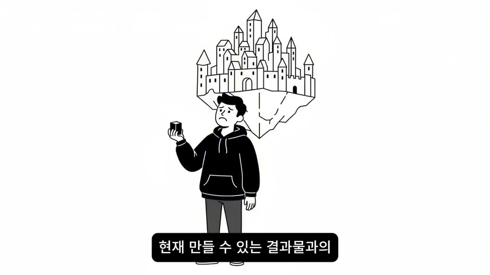
4단계 이름은 “2% 프로토타입 전략”입니다. INFJ 완벽주의의 핵심 구조를 “이미 머릿속에 완성된 이상 결과물이 존재”하는 상태로 해석하며, 현실 결과물과의 간극 체감이 시작을 막는다고 설명합니다.
2024년 듀크대 행동과학연구소 실험을 인용해, 완벽주의가 강한 참가자를 두 그룹으로 나눴고 1그룹에는 최선 결과물을 만들라고 지시했다고 말합니다.
스크린샷은 작은 블록을 든 인물 뒤로 거대한 공중 성이 떠 있어 ‘이상/현실 격차’를 극적으로 시각화합니다.
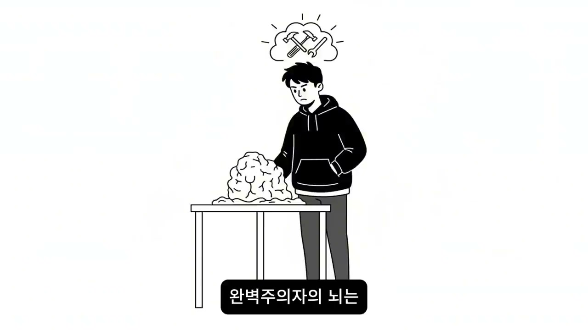
2그룹은 완성도 2%짜리 초안을 가장 빠르게 만들라는 지시를 받았고, 결과는 2% 그룹이 최종 품질 26% 더 높고 완료 시간 43% 단축이었다고 제시됩니다.
이유는 추상 상태에선 무한 시뮬레이션이 돌지만, 눈앞에 구체 형태가 생기면 뇌가 개선 모드로 전환되기 때문이라는 설명입니다. 실천법으로 마인드팰리스를 걸으며 오늘 에너지를 투입할 클러스터 하나를 고르고, 그 주제의 최소 행동 단위를 정의하라고 안내합니다.
이미지에서는 손도구(개선) 아이콘과 미완성 덩어리 작업 장면을 통해 “완벽 완성”이 아니라 “수정 가능한 초안” 관점을 강조합니다.
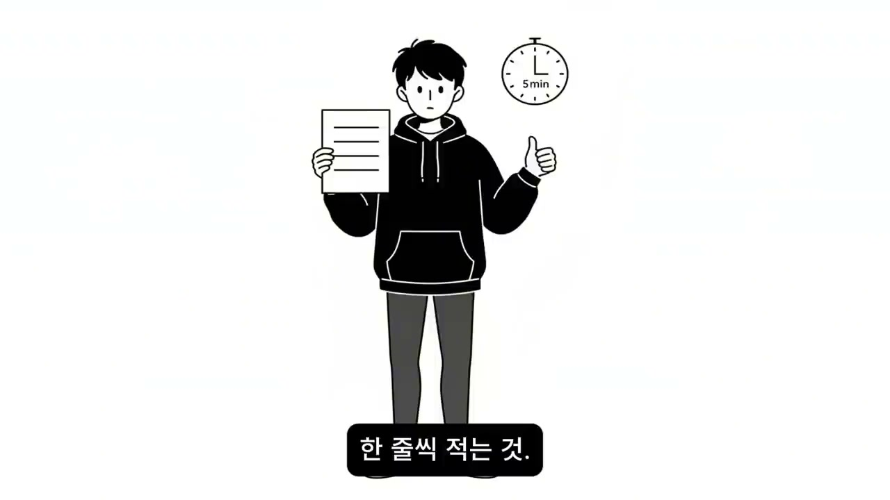
핵심 조건은 5분 안에 끝낼 수 있을 만큼 작아야 한다는 것입니다. 커리어 방향성이 주제라면 “고려 중 옵션 3가지를 한 줄씩 적기”, 관계 에너지 누수라면 “최근 1주일 에너지 소모 상호작용 3가지를 단어로만 적기”가 예시입니다.
이 단계에서는 장단점 분석, 우선순위, 해결책 탐색을 모두 금지합니다. 2% 결과물이 눈앞에 존재하면 그때부터 개선 편집이 가능해진다고 설명합니다.
스크린샷에 5min 시계와 종이/엄지 아이콘이 들어가 있어 시간 제약형 실행 규칙을 명확히 보여 줍니다.
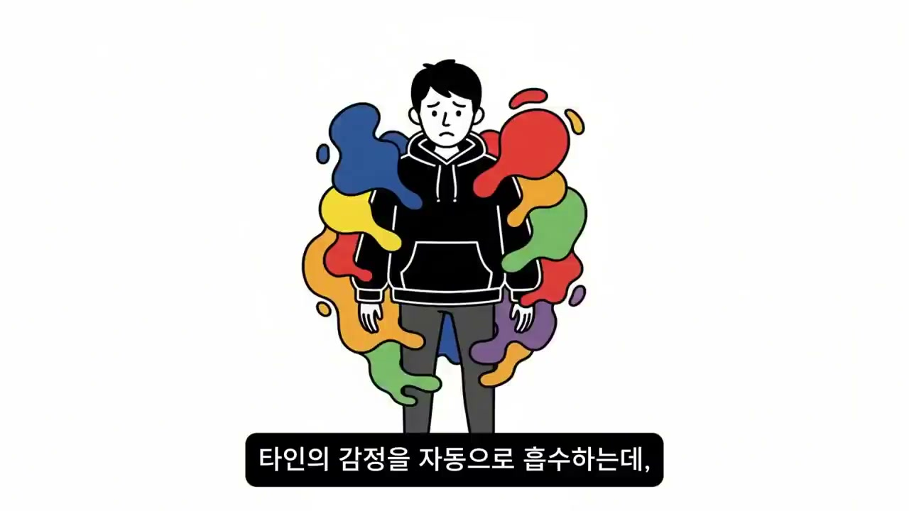
2% 결과물 이후 뇌는 추상 시뮬레이션을 멈추고 구체 편집 작업으로 들어간다고 정리합니다. 이어 5단계 “감정 태깅 시스템”으로 넘어가며, INFJ의 또 다른 병목을 감정 과부하로 정의합니다.
Fe 때문에 타인의 감정을 자동 흡수하는데, 문제는 내 감정과 타인 감정의 경계가 흐려진다는 점입니다. 2025년 예일대 감정지능연구센터의 “감정 분화(emotional granularity)” 개념을 소개합니다.
스크린샷은 다채로운 색 덩어리가 인물을 둘러싼 장면으로, 타인 감정 유입의 포화 상태를 강하게 상징합니다.
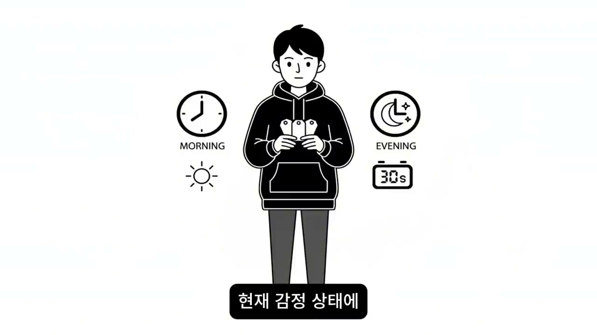
연구 결과로 감정 분화 능력이 높은 사람은 스트레스 상황에서 편도체 활성화 38% 낮고, 감정 회복 속도는 2배 이상 빠르다고 제시합니다.
훈련법은 하루 3번(아침·점심·저녁) 30초 투자해 현재 감정에 3개 태그를 붙이는 것입니다. 1태그는 감정 이름(불안/초조/걱정처럼 세분), 2태그는 강도입니다.
스크린샷에는 MORNING, EVENING, 30s 표기와 태그 카드를 든 인물이 등장해 루틴 구조를 직관적으로 보여 줍니다.
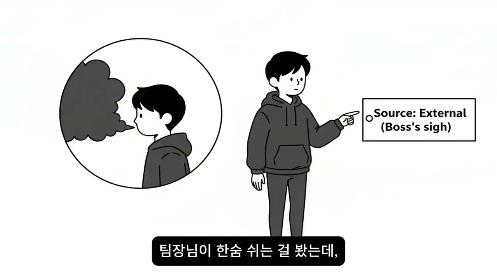
3번째 태그는 출처이며, 감정이 내부 발생인지 외부 전이인지 추적하는 과정입니다. 예시로 오전 회의에서 팀장 한숨을 본 뒤 무거운 감정이 시작됐다면, 그것은 내 고유 감정이 아니라 흡수 감정일 가능성이 높다고 말합니다.
실제 태깅 예시는 “초조함 / 강도 6점 / 출처: 아까 읽은 뉴스 기사에서 전이 추정”입니다. 이 태깅은 두 가지 효과를 만든다고 다음 세그먼트에서 연결합니다.
스크린샷에는 Source: External (Boss’s sigh) 문구가 명시되어 출처 태깅의 핵심을 시각적으로 고정합니다.
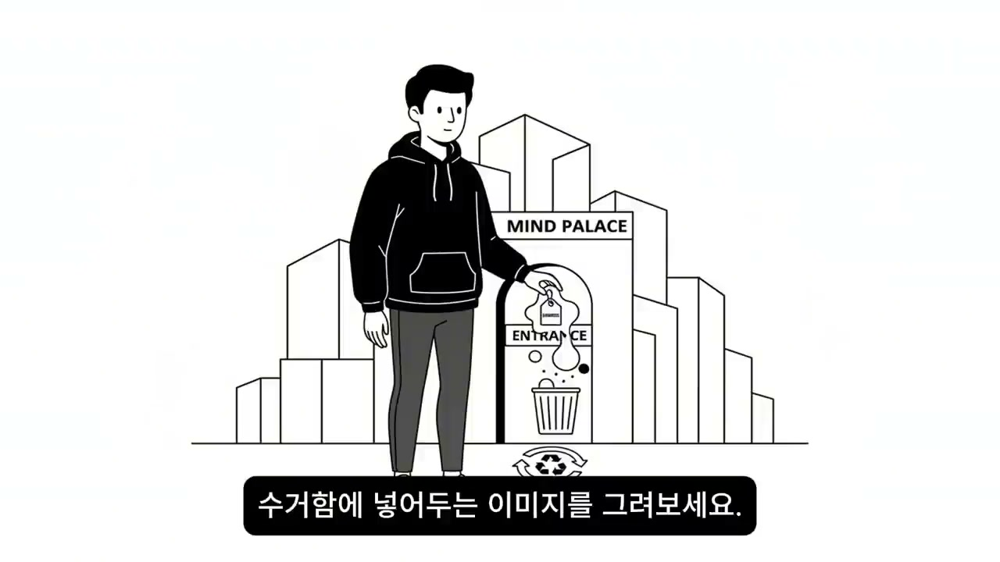
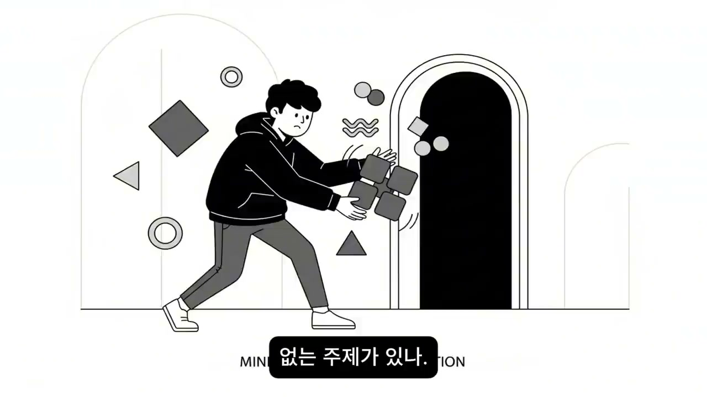
첫 효과는 모호한 불쾌감이 구체 데이터로 변환된다는 점, 둘째 효과는 감정과 자아 사이에 관찰자 거리가 생겨 압도 대신 관리가 가능해진다는 점입니다.
감정 태그를 마인드팰리스와 연결하면 더 강력해진다고 하며, 외부에서 흡수한 감정은 마인드팰리스 입구 바깥 수거함에 넣는 이미지를 사용하라고 안내합니다. 이는 시각화 기반 경계 설정 기술입니다.
스크린샷의 MIND PALACE, ENTRANCE, 수거함 이미지는 “내 공간 안으로 들이지 않는다”는 규칙을 장치적으로 보여 줍니다.
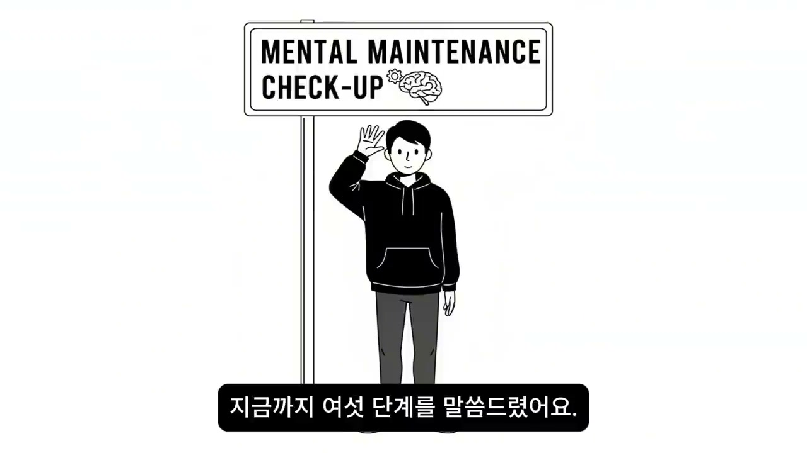
마지막 단계는 시스템 지속성을 만드는 주간 리뷰 루프이며, 매주 일요일 저녁 20분 투자하라고 제시합니다. 마인드팰리스를 천천히 걸으며 네 가지 질문을 수행합니다.
질문은 (1) 이번 주 실제 에너지 투입 클러스터, (2) 방치된 클러스터, (3) 새로 추가할 주제, (4) 더 이상 공간을 차지할 필요 없는 주제의 존재 여부입니다. 이 과정에서 위치 재배치, 이미지 업데이트, 공간 밖 배출을 수행합니다.
2024년 런던 정경대 행동과학팀 연구 인용으로 주간 체계 리뷰가 목표 달성률을 62% 향상시킨다고 주장합니다. 이미지의 MENTAL MAINTENANCE CHECK-UP 표지판은 이 단계를 “정신적 정기점검”으로 재정의합니다.
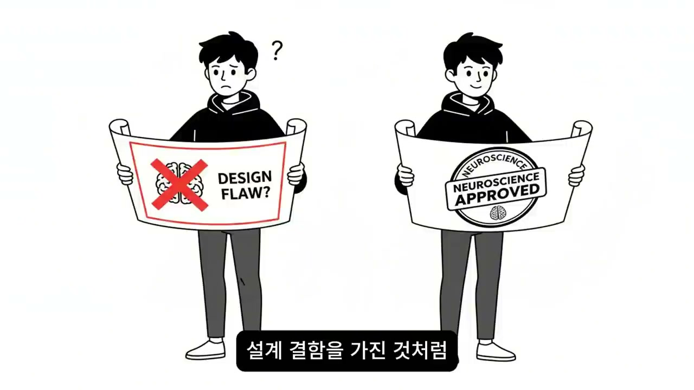
INFJ에게 주간 리뷰가 특히 중요한 이유는 모든 것을 내면 처리하려는 경향 때문에 정신적 짐이 무의식적으로 누적되기 쉽기 때문이라고 설명합니다.
주간 리뷰는 누적된 짐을 정기적으로 점검·제거하는 장치로, 일회성 기법이 아니라 운영 시스템으로 제시됩니다. 여기서 6단계를 재요약합니다: 브레인덤프, 클러스터링, 마인드팰리스 구축, 2% 프로토타입, 감정 태깅, 주간 리뷰 루프.
스크린샷 BUG를 지우고 FEATURE를 강조하는 장면은 이후 정체성 재구성 메시지의 예고입니다.
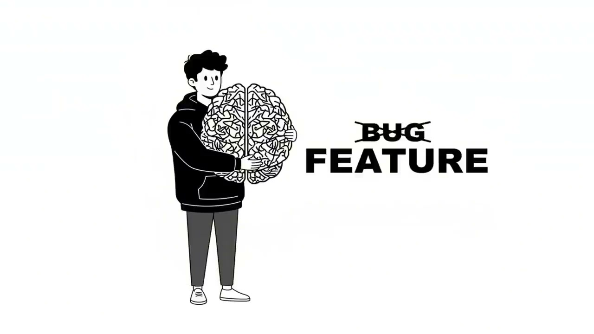
발표자는 마지막 핵심이 기술이 아니라 “당신 자신”에 관한 것이라고 전환합니다. INFJ가 스스로에게 던지는 자책형 질문(왜 단순히 못 사나, 왜 깊이 생각하나, 왜 남 감정에 쉽게 영향받나)을 직접 호명합니다.
그다음 이를 반전시켜, 뇌과학 관점에서는 결함이 아니라 고사양 시스템이라고 주장합니다. 일반 뇌가 수집하지 않는 수준의 데이터를 수집하고, 보지 못하는 패턴을 인식하며, 더 깊은 층위까지 분석하도록 설계됐다는 논리입니다.
이미지에는 좌측 DESIGN FLAW?와 우측 NEUROSCIENCE APPROVED 대비가 배치되어 메시지 전환을 명확히 시각화합니다.
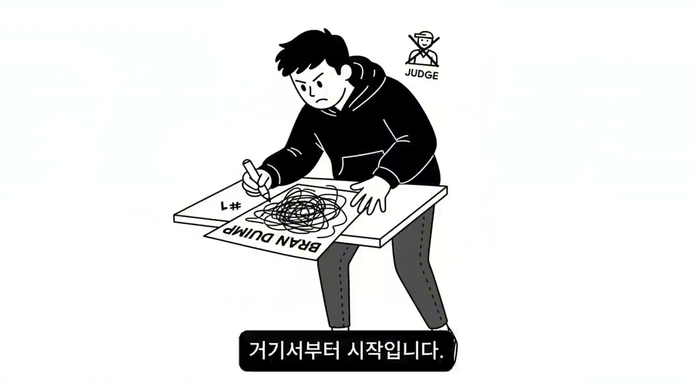
일반 생산성 도구가 잘 작동하지 않았던 이유를 “보급형 시스템용 매뉴얼”이었기 때문이라고 해석합니다. INFJ에게는 고사양 시스템에 맞는 운영 방식이 필요했다는 주장입니다.
오늘 제시한 시각화 시스템은 복잡함을 부정/단순화하는 방식이 아니라, 복잡함을 있는 그대로 인정하고 효율적으로 운용하는 방식입니다. “깊은 사고력은 버그가 아니라 피처”라는 문장이 이 세그먼트의 압축 결론입니다.
스크린샷의 스크리블→방패/검 아이콘은 복잡성이 보호·무기 기능으로 변환되는 이미지를 전달합니다.
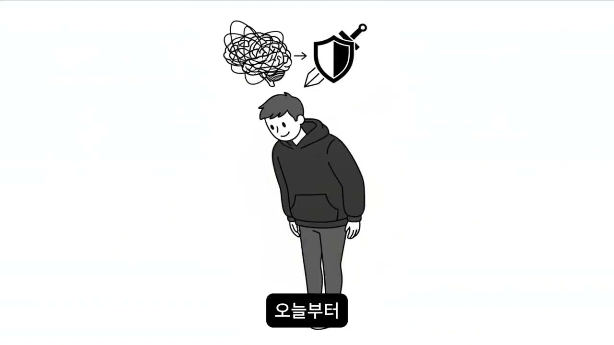
능력을 지속 운용하려면 관리 시스템이 필요하다는 점을 재확인하며, 첫 실행을 오늘 밤 7분으로 고정합니다. 종이 한 장을 꺼내 지금 머릿속의 것을 전부 쏟아내고, 판단/정리 없이 쓰라고 반복 강조합니다.
즉 “그게 첫 브레인덤프이며 거기서부터 시작”이라는 실행형 마무리입니다. 채널 메시지로는 “데이터로 증명하고 심리로 해결하는 성장 전략 연구소” 정체성을 재확인하고 좋아요/구독/알림 CTA를 제시합니다.
이미지의 BRAIN DUMP #1, 취소된 JUDGE 아이콘은 무판단 원칙을 정확히 시각화합니다.
최종 문장은 영상 전체의 논지를 한 줄로 요약합니다. “생각이 많은 것은 문제가 아니고, 정리되지 않은 생각이 머릿속에서 맴도는 것이 문제”라는 재정의입니다.
따라서 오늘부터 복잡한 머릿속은 약점이 아니라 무기가 된다는 선언으로 종료하며, 채널 인사와 감사 멘트로 영상이 끝납니다.
시각적으로는 직전 세그먼트의 브레인덤프 장면을 연속 사용해, 결론을 행동으로 귀결시키는 편집 구조를 만듭니다.
“머릿속에 수백 개의 탭이 열려 있는 브라우저처럼, 당신의 뇌는 지금 과부하 상태입니다.”
“문제는 이 생각들이 체계적으로 정리되지 않은 채 무한 루프를 돈다는 겁니다.”
“일반적인 생각 정리법은 선형적이고 텍스트 기반인데, 인프제의 사고는 비선형적이고 이미지 기반이에요.”
“절대로 정리하려고 하지 마세요. 판단하지 말고 분류하지 말고 그냥 떠오르는 대로 적으세요.”
“공간이 제한되면 생각도 제한됩니다.”
“분석하려고 하지 말고 그냥 바라보세요. 인프제의 내향 직관은 이런 상황에서 자동으로 패턴을 찾아냅니다.”
“문제의 크기는 같아도 눈에 보이면 다룰 수 있다는 느낌이 생깁니다.”
“핵심은 5분 안에 끝낼 수 있을 정도로 작아야 한다는 거예요.”
“어떤 감정이 내 것이고 어떤 감정이 남의 것인지 구분이 안 된다는 게 문제예요.”
“외부에서 흡수한 감정은 마인드 팰리스 입구 바깥 수거함에 넣어두는 이미지를 그려보세요.”
“당신의 깊은 사고력은 버그가 아니라 피처예요.”
“생각이 많은 건 문제가 아닙니다. 정리되지 않은 생각이 머릿속에서 맴도는 게 문제일 뿐이에요.”
이 영상의 핵심 메시지는 INFJ의 인지 복잡성을 줄이는 것이 아니라 운영 가능한 형태로 변환하는 데 있습니다. 즉 “적게 생각하라”가 아니라 “많은 생각을 외부화·공간화·소단위 실행화하라”가 실제 처방입니다.
실용적 시사점은 세 가지입니다. 첫째, 텍스트 중심 정리 강박을 버리고, 무한 캔버스/공간 배치/이미지 상징을 기본 인터페이스로 바꿔야 합니다. 둘째, 실행은 ‘완성’이 아니라 ‘2% 형태 생성’이 시작점이며, 5분 미만 단위가 실행마비를 깨는 핵심입니다. 셋째, 감정은 느낌이 아니라 데이터로 태깅하고(이름·강도·출처), 주간 리뷰로 누적 부담을 정기 배출해야 시스템이 유지됩니다.
향후 관점에서 보면, 이 프레임은 INFJ뿐 아니라 “과잉 사고 + 완벽주의 + 정서 흡수” 조합을 가진 사람에게도 확장 적용 가능합니다. 영상은 결국 생산성 팁을 넘어, 자기 인지 구조를 결함이 아닌 자산으로 재해석하는 심리적 전환까지 목표로 합니다.
댓글
GitHub 이슈 기반 댓글 시스템입니다.